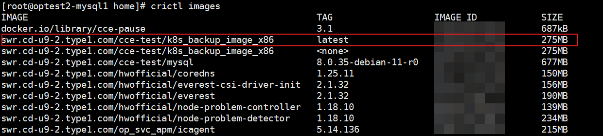

Before performing backup or restoration, you need to upload the Kubernetes installation package to the image repository. During backup or restoration, you need to use images to deploy the backup pod in the production environment for data migration during the running of backup or restoration jobs. Therefore, you need to upload the Kubernetes installation package to the image repository to deploy the backup pod.
Prerequisites
Before uploading the Kubernetes installation package, query the version and patch number on the , and download the XXX_K8s_BackupImage.tgz installation package based on the queried version and patch number. Decompress the installation package to obtain the k8s_backup_image_x86.tar or k8s_backup_image_arm64.tar compressed package of the corresponding product architecture. You can obtain the Kubernetes installation package by using the following methods:
- For enterprise users: Click here.
- For carrier users: Click here.

You can query the version and patch number in the following way:
- Click
 in the upper right corner and choose About.
in the upper right corner and choose About. - In the dialog box that is displayed, the version and patch number are displayed in the line where Version is located.
- Click
Precautions
The tenant of each Cloud Container Engine (CCE) cluster that needs to use the backup or restoration function needs to perform the following steps to upload and update the installation package.
Procedure
- Log in to ManageOne Operation Portal.
- Choose Service List > Cloud Container Engine > SoftWare Repository for Container to go to the Dashboard page of the image repository.
- Upload an image by following steps 1 and 2 in the Getting Started area on the Overview page.
- After the Kubernetes installation package is uploaded, click My Images and select the name of the uploaded compressed package to go to the corresponding details page.
- Locate the row that contains the latest image version, click containerd Command, and copy the command for downloading the image.
- Click Edit in the upper right corner of the page to set Type to Public.
- Log in to each node in the Kubernetes cluster and run the crictl images command to view the local image information. If the command output contains information, record the value of IMAGE ID corresponding to the image whose TAG value is latest. If the command output is empty, you do not need to record any information.

- Run the image download command copied in 5 on all nodes that you have logged in to.
- After the image download command is successfully executed, run the crictl images command again to view the local image information. If IMAGE ID of the image whose TAG value is latest is different from the image ID queried in 7, the local image is successfully updated. If the command output in 7 is empty, an image whose TAG value is latest is added to the local image information, indicating that the image is successfully downloaded.